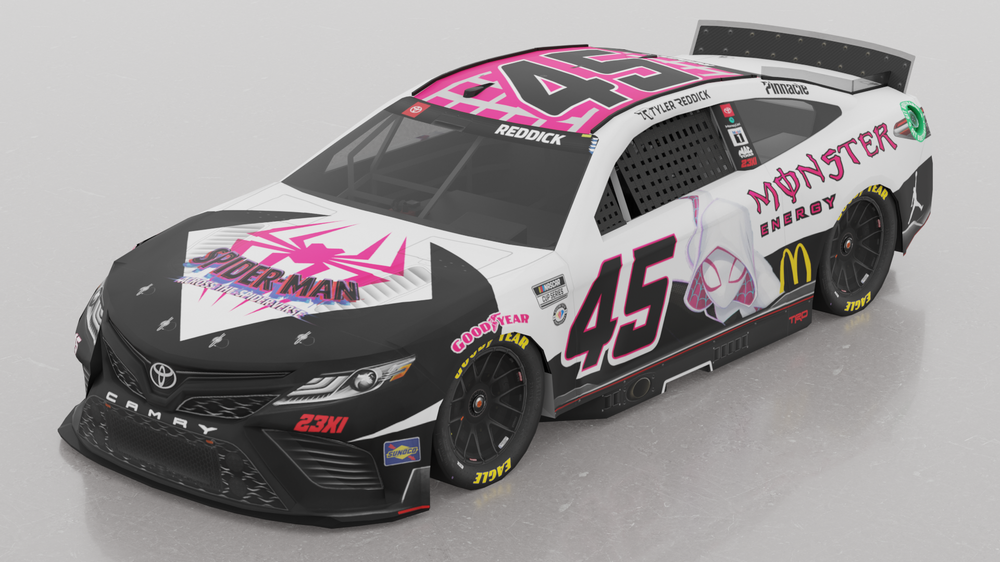
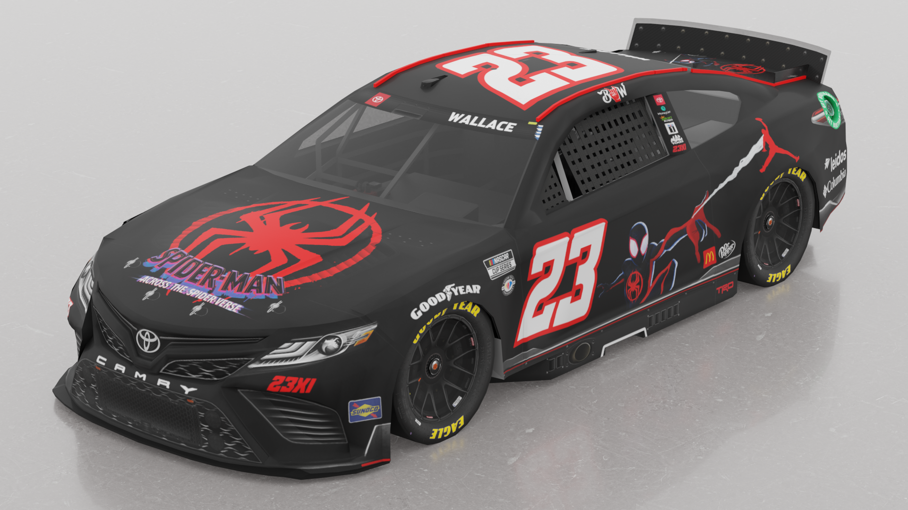
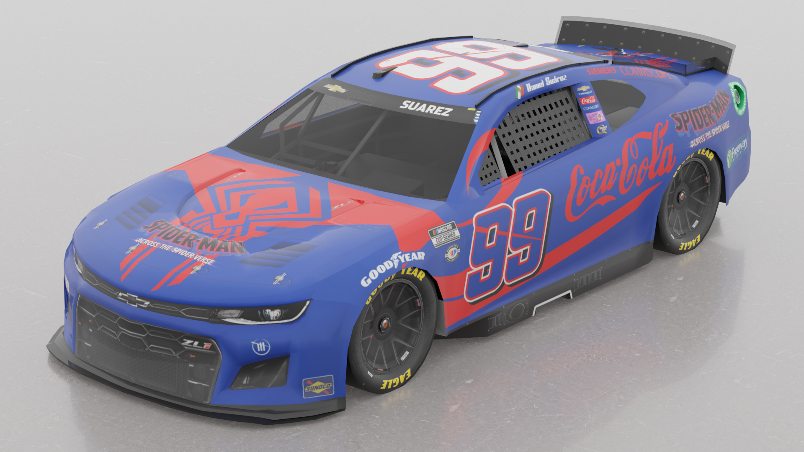
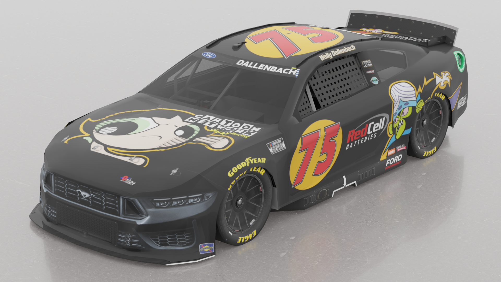
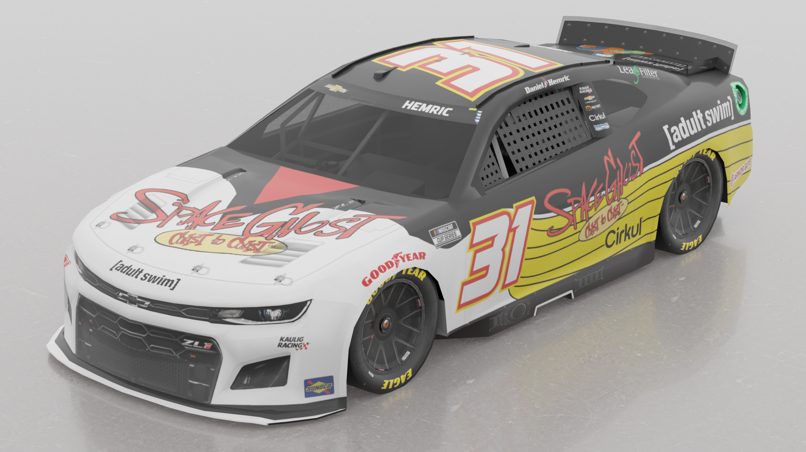
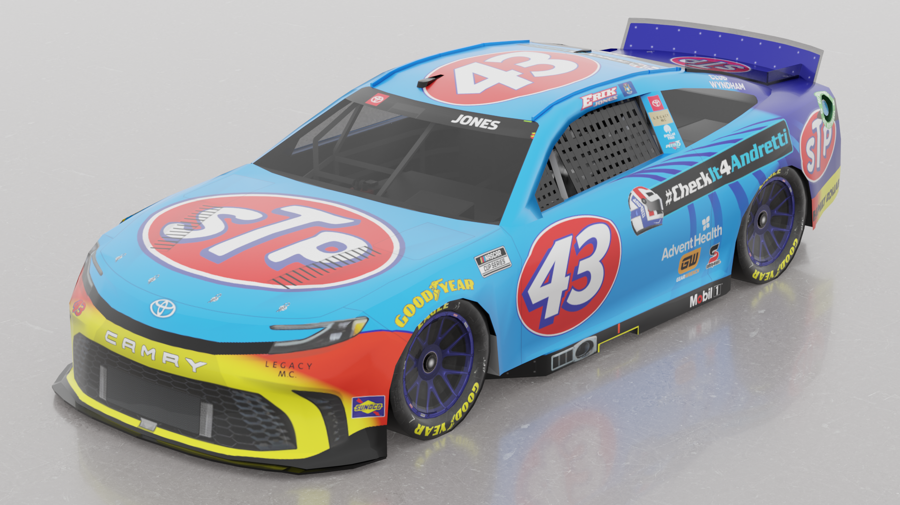

Welcome to my Photopea Page. This is your one-stop shop to see some select NASCAR Racing 2003 Season Paint Schemes that I've created in 2023 and 2024.

Created right around the time of Across The Spider-Verse's initial release, this ride is part of a 3-car set featuring paint schemes based on Miles Morales, Gwen Stacy, & Miguel O'Hara's Spider-Suit designs. This proved to be the favorite among the friends I've shown the design to.

Clean, Red and Simple. Those are the 3 words I'd describe the Miles Morales paint scheme for Bubba Wallace. As Bubba is Tyler Reddick's current teammate in the NASCAR Cup Series, bringing his #23 Toyota into the fun felt right, and is a bit of a tribute to the duel sponsored schemes that teams would run in the late 90s and early 2000s.

The last scheme created during this Spider-Man themed stretch. This one focused on Miguel's Mexican roots and since Suarez has run Mexican Heritige paint schemes with Coca-Cola on the hood, I felt it was right to give Daniel Suarez some of that 2099 flair.

One of the first paint schemes that I worked on earlier this year, and the first to include work from Adobe Illustrator. This was a fun project and really tested my Adobe Illustrator skills and was a easy time implementing those vectors onto the Ford Mustang template.

Another 2024 Project that features some usage of the vectors featured in the Illustrator page. This was created thanks to the show turning 30 years old and was part of a set of Adult Swim paint schemes until I scrapped that idea. This is the only completed remnant of that idea.

One of many paint schemes I've created as a conceptual design for NASCAR's Throwback Weekend, this one is based on John Andretti's STP Pontiac that he ran for Petty Enterprises in the year 2000. This also serves as a tribute to the man, as he passed away in 2018 due to Colon Cancer, and the #CheckItForAndretti began in honor of his memory.